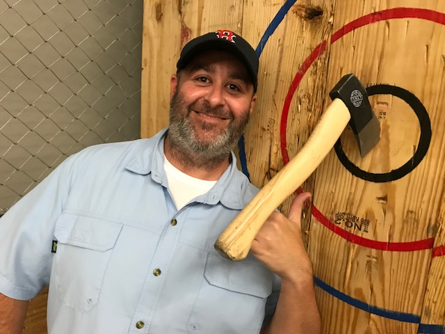

About Me
I was born in Plymouth, Massachusetts, however my parents moved to South Texas when I was about five so I guess that really makes me a Texan. Growing up in Corpus Christi wasn't all that exciting. The city is best known for the beaches and Selena. In the summer of 2001, I was lucky enough to marry the girl of my dreams. She just happened to be the girl I went to senior prom with too. We have one son who will turn 19 years old this October. We have lived in the Austin area, always south, for about 11 years. This is by far the best city in Texas to live in.
I have my Bachelor's degree in Business and my Master's degree in Human Resource Management. For the past six years, I have worked for an international adoption agency. We currently faciliate adoptions from Bulgaria, Burundi, China, Dominican Republic, Haiti, and Latvia. We also have orphan hosting and student exchange programs. The work is very rewarding but definitely takes it's toll on a person after a while.
Some of my interest/hobbies are: playing golfing, craft beers, and pretty much watching any type of sports. I'm recently trying to be more classy so I've taken an interest in cigars and whiskey.